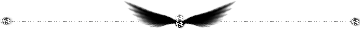

断ち切られた赤い糸。
― あかいろのなみだ。―
「I love you……」
愛する人を守ること叶わず
地へと堕ちた天使は 自らへの戒めとして
その両腕と手首に、きつくきつく茨を巻きつけ
流れる血と涙にも気づかず
ぼろぼろになってしまった翼で ひたすらに空を目指すでしょう。
愛する少女を救うことが出来ないことを知りながらも
ひたすらにあの空を目指すでしょう。
紅い血潮と涙と 純白の羽とが宙に舞い
自らの手を茨で締め付けて
ただ必死で天使はあの空を目指すでしょう。
羽ばたけば羽ばたくほど、
その翼から羽が抜け落ちていく事を知りながら。
天使がいくら涙を流して空を目指そうとも
伸ばすその手は茨に捕られ
愛する人に届くことは無いでしょう。
「僕の愛した茨姫
……助けられなくてごめんなさい。
貴女を二度と傷つけなくてすむようにこの身に刻んだ刻印が
貴女へと伸ばす腕を掻き消してしまう
この無力を嘆く以外に
僕は――――― ……」
ヒツウノサケビ
引きつれたような 嘆き声 耳を塞ごうとする手は茨に捕らわれ
アカ
美しい 残酷な涙が宙に散る。
天使は空に帰れない
優しい青に叩き落とされ 天使の嘆きは掻き消えた。
アクマ
愛を告げられた少女は 愛を囁き返す前に
テンシ
少年を堕とした罪として 十字の架に囚われた。
ああ、皮肉にも
彼はその手で愛する人の命を砕いてしまったのだから。
一体誰が堕天使の帰還を望むというのでしょう？
地上で死神に引き裂かれた愛し合う恋人同士には
天上での再会の涙が待っている キズナ
……天上で出会い神に引き裂かれてしまった 糸 には
一体いつ再び結ばれるときが来るのでしょう。
「私の愛した王子様
………助けてもらえないことを許して。
私を傷つけたと思って 貴方は私より傷ついてしまった。
ああ、貴方が伸ばすその手は傷だらけで、
私にはその手を掴むことなんて出来ないわ。
この無力を呪う以外に
私は――――― ……」
イキルバショ
互いに思うあまり その 翼の色 の違いさえ忘れ
惹かれあってしまった魂には
傷つけあう運命しか残されないのでしょうか。
天国に行けば幸せになれるなんて言ったのは誰？
神さまは完璧？天使は神聖？
悪魔は害をなす者でしか無いなどと。
天使を消すのが悪魔なら
悪魔を消すのも天使だとも言えるのに。
リソウキョウ
天国 への賛歌が聞こえる
彼らを見ても歌えるのでしょうか？
ほら 見てごらんなさい。
十字架を包み込むように、紅蓮の炎が空へと踊る。
理想郷は本当に
この世界に存在するのかしら。
「愛しています……」

― えいえんのすれちがい。―
「I miss you……」
今となっては昔のお話。
月からやってきた綺麗なお姫様と、
一つの国を治めている男の人がありました。
運命や赤い糸がそこにあったとするならば、
カミサマ ドラマ
運命の描き手はどのくらい悲しい戯曲がお好きなことかしら。
ああだけど、彼らがいくら愛し合おうとも。
タイムリミット
八月の十五夜は容赦無く。
たった二人の恋情で 宇宙の時が止まるはずが無い。
全てを知ってたお姫様と、全てを知らなかった男の人は。
さようなら、またいつか会いましょう。
さようなら、愛しい我が姫よ。
いつか必ずまた会いましょう。
天女が二人を引き離す。
二人はつかの間の時間に、儚い永遠を誓ったの。
姫は全てを知ってた上で、男は何も知らぬまま。
そして天女は容赦無く、そのお姫様の綺麗な肩へ、天の羽衣かけました。
涙を流す帝の前で、かぐや姫は月へ帰っていく。
だけど彼は幸せもの。だって貴方は知らないの。
美しい天の羽衣は、人の心を掻き消す衣。
ココロ
かぐや姫の記憶から貴方のことは消えてしまっているということを。
だって貴方は知らないの。
かぐや姫は月の人。貴方はこの星の人。
たとえその命が終わろうとも 魂だけになろうとも
再会は
永遠にやって来ないのだから。
彼は幸せもの。そして不幸なひと。
自分の命が終わった後に、彼は永遠の時を泣き続けることでしょう。
不死の薬の意味を知る頃には
もう全てが遅すぎたのです。
「貴女に逢いたい……」
― ゆきだるま。―
春の日差しに恋した雪だるまは
愛する光とつかの間の邂逅を果たし
コ ロ サ レ テ
その光に 溶かされていく。
それでも何故か最期の表情は笑顔を浮かべて。
純白の雪が、至高の光に輝く。
それはまるで天使のはしごのようで。
「ああ、貴方に会えた……」
― ひまわり。―
太陽に恋して
太陽を追いかけて
ナツノオワリ
最期 には、たった一人きりでうなだれて。
ああ、私の愛しい太陽はどこなの？
……もう、何も見えないよ。
「一度で良いの。私が死ぬ前に、振り向いて……」
― ろうそく。―
キャンドルと揺れる炎。
キャンドルは巡り会いに嬉し泣き。炎は喜びに身体を震わせて。
お互いに身体を消し合う運命とも知らず。
お互いに存在しなければ輝けないけれど、
その先に終焉が待っているとしてもその手を取るのですか？
「Yes.」
― ひと。―
出会った時から、決められていることはたったの一つだけ。
いつかは必ず、さよならがやってくるのです。
もしそれが明日だとしても
貴方に後悔はありませんか。
宝玉で出来た、たった一つの貴方の大きすぎる砂時計は
動いていないように見えていても
確実にその時を刻んでいる。
ほら、さらさらと音を立てて砂が落ちていく。
「……ねえ、嘘でしょう？」
―いぞんしょうこうぐん。―
「I need you……」
合わせた左手と左手。
その小指にあったのは何だったのでしょう。
赤い糸？ 運命？
それとも神さまのお遊戯の跡なのでしょうか。
透明な涙と赤い涙がぽたんぽたん。
求めるほどにすれ違い
hopeless
そして最期は （永遠に） 引き離されてしまうのです。
引き裂かれた想い人たちは
片や思い出を糧にして 片や思い出を心に閉じ込めて
あるいは生きて
……あるいは終止符を。
理想郷なんてどこにあるの？
愛する人はどこにいるの？
どうして私は生きているの？
どうして貴方はここにいないの？
会いたい会いたい会いたい会いたい会いたい……
キセキ
………希跡を 下さい。
哀嘆の嗚咽が蒼穹に吸い込まれて消える。
「運命を描いたのは一体誰？
…貴方のいない世界など―――― ……」
依存症候群。赤い雫の涙が散るの。
永遠の時を嘆く彼らに
シアワセ
いつか最期には奇跡が訪れるように。
一欠けらの希望を込めて 私は神に祈るのでしょうか。
２００６年 文藝部誌「游」 初秋の号掲載